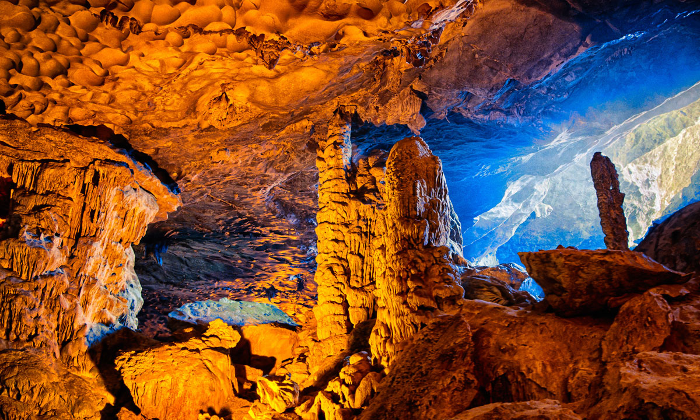
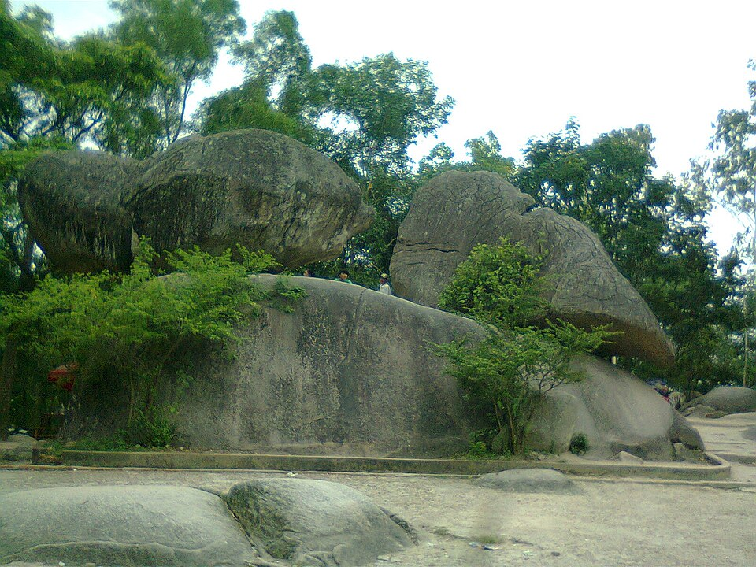
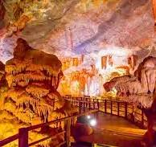

CÁC ĐỊA ĐIỂM DU LỊCH NỔI BẬT TẠI VỊNH HẠ LONG
1. Hang Sửng Sốt

Hang Sửng Sốt là một trong những hang động nổi tiếng tại Vịnh Hạ Long. Nơi đây thu hút du khách bởi không gian rộng lớn và những khối thạch nhũ có hình dáng độc đáo.
2. Đảo Titop
Đảo Titop nổi bật với bãi cát trắng, làn nước trong xanh và khung cảnh thiên nhiên tuyệt đẹp. Du khách có thể tắm biển hoặc leo lên đỉnh đảo để ngắm toàn cảnh vịnh.
3. Hòn Trống Mái

Hòn Trống Mái là biểu tượng nổi tiếng của Vịnh Hạ Long, gồm hai khối đá có hình dáng giống một đôi gà đang hướng vào nhau giữa làn nước biển.
4. Hang Đầu Gỗ

Hang Đầu Gỗ gây ấn tượng với những khối thạch nhũ đa dạng, không gian rộng và vẻ đẹp kỳ thú. Đây là địa điểm hấp dẫn dành cho du khách yêu thích khám phá thiên nhiên.